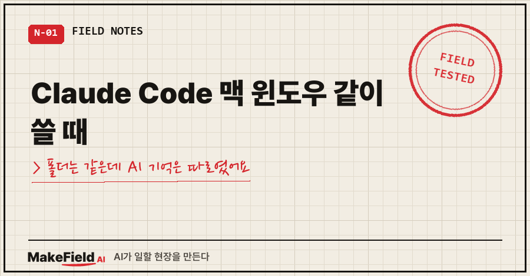
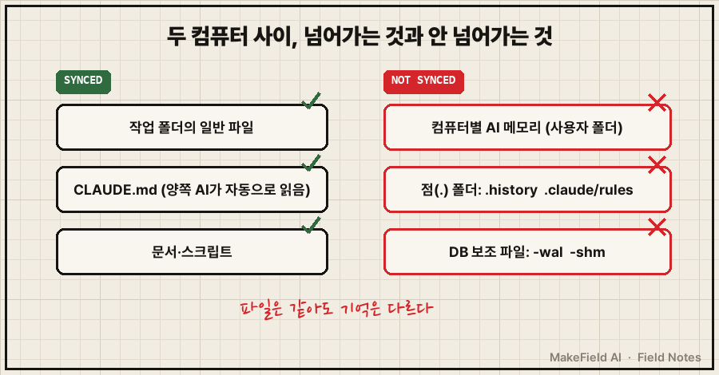
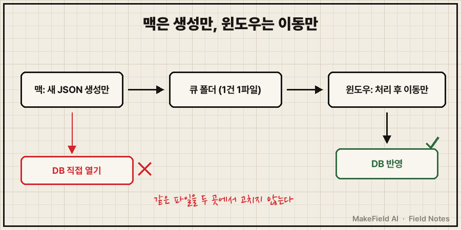

Claude Code 맥 윈도우 같이 쓰기, 폴더만 동기화하면 끝날 줄 알았어요.
파일은 두 컴퓨터에 똑같이 깔렸는데, 맥에 있는 AI는 윈도우 AI가 들은 설명을 하나도 몰랐습니다.
핵심 사실 한 줄. Claude Code의 자동 메모리는 공식 문서 표현 그대로 "machine-local"이라 다른 컴퓨터와 공유되지 않고, 두 대가 함께 알아야 할 규칙은 동기화 폴더 안의 CLAUDE.md 같은 파일에 적어야 양쪽에 전달돼요.
공장 자동화·제어 쪽에서 15년 굴러온 엔지니어예요.
퇴근 후엔 개인 AI 자동화를 윈도우 PC에 돌려 두고, 맥북은 들고 다니며 대화용으로 씁니다.
이 조합을 처음 묶던 날 하루 동안 걸린 함정 세 개를 순서대로 적어 볼게요.
1. 폴더를 통째로 동기화했는데 왜 AI가 같은 걸 또 물을까?
구성은 단순했어요.
작업 폴더 전체를 시놀로지 드라이브(NAS 동기화 프로그램)로 윈도우와 맥에 똑같이 내려받고, 양쪽에서 같은 Claude Code를 띄웠습니다.
그런데 맥 AI가 어떤 원격 연결 기능을 쓰자고 제안하더라고요.
그건 제가 윈도우 쪽 AI한테 이유까지 설명하고 이미 거절한 기능이었어요.
그날 제가 남긴 말이 기록에 그대로 있습니다.
몇 번을 더 설명해야 하나원인은 생각보다 단순했어요.
Claude Code가 스스로 적어 두는 자동 메모리는 작업 폴더가 아니라 각 컴퓨터의 사용자 폴더 안(~/.claude/projects/<프로젝트>/memory/)에 저장됩니다.
공식 문서에도 "Files are not shared across machines"라고 적혀 있어요.
동기화 폴더 밖이니 윈도우에서 배운 건 맥으로 안 넘어갑니다.
고친 방법: 거절한 이유를 메모리가 아니라 동기화 폴더 안의 CLAUDE.md에 한 줄로 옮겼어요. 이 파일은 양쪽 AI가 세션 시작마다 자동으로 읽는 파일이라, 한 번 적으면 두 대에 다 전달됩니다.
2. 시놀로지 드라이브 점(.) 폴더는 왜 맥에 안 넘어올까?
메모리만 옮기면 끝인 줄 알았는데, 맥에서 작업 이력 폴더를 열어 보니 이상했어요.
윈도우에선 매일 쌓이던 기록이 맥에는 맥에서 만든 파일 1개뿐이었습니다. 규칙 폴더도 settings.json 하나만 보였고요.
그때 제가 한 줄 던졌어요.
앞에 점 때문에 맥에서 못읽는거 아니가?맞았습니다.
이력 폴더(.history)와 규칙 폴더(.claude/rules)는 둘 다 이름이 점으로 시작해요.
제 맥의 동기화 설정 파일을 열어 보니 이런 줄이 있었습니다.
black_prefix = "."점으로 시작하는 폴더는 통째로 동기화에서 빠진다는 뜻이에요.
(이 키 이름은 제 설정 파일에서 직접 본 값이고, 시놀로지 공식 문서에서 따로 확인하진 못했어요. 공식 도움말 기준으로는 동기화 작업의 고급 설정에서 파일 이름·확장자 필터를 바꿀 수 있습니다.)
여기서 필터를 풀어 버리는 방법도 있었는데, 고르지 않았어요.
풀면 반대로 맥의 .DS_Store 같은 잡파일과 맥 전용 설정 폴더가 윈도우로 섞여 들어옵니다.
그래서 필터는 그대로 두고, 맥 기록은 점이 없는 별도 폴더(_inbox/mac_history/)에 남기게 하고, 윈도우가 그걸 이력 폴더로 옮기게 했어요.

3. SQLite DB 파일을 동기화 폴더에 두면 무슨 일이 생길까?
세 번째는 사고가 나기 전에 막은 쪽이에요.
제 윈도우 자동화는 작업 기록을 SQLite DB 한 개에 색인해 둡니다. 이 DB도 동기화 폴더 안에 있었어요.
실측해 보니 DB 본체만 넘어오고, 보조 파일(-wal, -shm)은 안 넘어오고 있었습니다.
이 상태로 맥에서도 DB를 열면 이렇게 됩니다.
| 상황 | 결과 |
|---|---|
최신 기록이 -wal에만 있음 | 맥에선 최신 기록이 빠진 DB를 봄 |
| 맥에서 읽기만 해도 | -shm 생성·체크포인트로 파일이 바뀜 |
| 두 컴퓨터가 같이 씀 | 합칠 수 없는 충돌 사본(_Conflict)이 생김 |
SQLite 공식 문서에도 "All processes using a database must be on the same host computer"라고, WAL 모드는 같은 컴퓨터 안의 프로세스끼리만 쓰는 구조라고 적혀 있어요.
처음엔 "맥 전용 폴더를 따로 만들까"도 얘기가 나왔는데 접었어요.
충돌의 원인은 폴더가 아니라 같은 파일을 두 곳에서 동시에 고치는 것이었으니까요. 폴더만 나누면 정리 기준만 두 개로 갈라집니다.
4. 그래서 만든 구조, 맥은 '생성만' 윈도우는 '이동만'
맥은 DB를 아예 안 열기로 했어요.
대신 DB에 넣을 내용을 JSON 파일로 큐 폴더에 떨어뜨리고, 윈도우 예약 작업이 하루 두 번(10:15·22:15) 집어 가서 반영합니다.
규칙은 세 줄이에요.
1. 1건 = 파일 1개 (한 파일에 이어 쓰면 양쪽이 같은 파일을 고치게 됨)
2. 맥은 새 파일 생성만, 윈도우는 처리 후 _done/ 으로 이동만
3. 수정 시각이 10분 지난 파일만 처리 (동기화 도중 반쯤 넘어온 파일 방지)맥 쪽은 임시 위치에 파일을 다 쓴 다음 mv로 큐에 넣게 했어요. 쓰는 도중의 파일이 동기화로 넘어가는 걸 막으려고요.
같은 파일을 두 컴퓨터가 동시에 손댈 일이 구조상 사라졌습니다.

두 대에서 AI 쓰기 전에 볼 체크리스트
- AI가 배운 규칙이 어느 컴퓨터의 어느 폴더에 저장되는지 확인했는가
- 동기화 필터에 점(.) 폴더·특정 확장자 제외 규칙이 있는지 봤는가
- SQLite 같은 DB를 두 컴퓨터가 동시에 여는 구조는 아닌가
- 셸 별칭이 기본 명령을 가리지 않는가 (저는 Claude 실행 별칭을
wc로 지었다가 기본 단어 세기 명령/usr/bin/wc를 가려서cw로 바꿨어요..)
이런 걸 물어보실 것 같아서
Q. Claude Code 맥 윈도우 같이 쓰기라면, 자동 메모리 폴더도 동기화 대상에 넣으면 되지 않나요?
그 폴더 이름은 프로젝트 경로에서 따오기 때문에 윈도우와 맥에서 이름부터 달라져요. 게다가 두 AI가 같은 메모리 파일을 동시에 고치면 결국 3번과 같은 충돌 문제가 생겨요. 저는 "두 대가 다 알아야 하는 것"만 CLAUDE.md로 옮기는 쪽을 골랐습니다.
Q. 한글 파일명은 괜찮던가요?
맥은 한글을 자모로 나눠 저장해요(NFD). 제 맥에서 세어 보니 한글 이름 8,564개 중 8,547개가 그 방식이었고, 내려받을 때는 시놀로지 드라이브가 변환해 주고 있었어요. 반대 방향(맥에서 저장한 파일이 윈도우로 갈 때)은 아직 검증 전입니다.
Q. 이런 구조를 다 직접 짰나요?
설계 판단은 AI랑 같이 했고, 결정적인 원인 하나(점 폴더)는 제 질문 한 줄에서 나왔어요. 실측은 AI가 했고, 의심은 사람이 먼저 했던 셈이에요.
결국 이 하루에 배운 건 하나예요. 두 대에서 AI를 쓰면 파일은 같아도 기억은 다릅니다. 같이 알아야 할 건 동기화되는 파일에 적어 두는 수밖에 없어요!
컴퓨터 두 대를 묶으면서 바꾼 설정과 그 이유는 makefield.ai에 따로 정리해 두고 있어요.
출처
- Claude Code 공식 문서, How Claude remembers your project — "Auto memory is machine-local. … Files are not shared across machines or cloud environments." → https://code.claude.com/docs/en/memory
- SQLite 공식 문서, Write-Ahead Logging(WAL은 같은 호스트의 프로세스 전제, 네트워크 파일시스템에서 동작 안 함) → https://www.sqlite.org/wal.html
- 실측: 2026-10-11 개인 윈도우 PC·맥북 동기화 설정 기록(IP·계정·기기명 제외)
태그: #ClaudeCode맥윈도우 #ClaudeCode #맥윈도우같이쓰기 #시놀로지드라이브 #시놀로지드라이브동기화 #점폴더동기화 #숨김폴더동기화 #SQLite동기화 #SQLite충돌 #ClaudeCode메모리 #CLAUDEmd #두대컴퓨터AI #동기화충돌 #자동화만들기 #MakeFieldAI